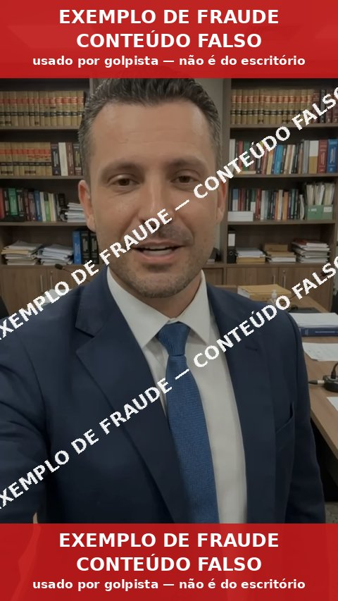

Escritório Juliano Garbuggio — Direito Bancário e Revisão de Empréstimos Edição 1 · Outubro de 2026
Guarde e confira
Os únicos canais oficiais do escritório
Salve estes contatos no seu celular com o nome “Dr. Juliano — OFICIAL”. Qualquer outro número, e-mail ou perfil que se apresente como o escritório deve ser tratado como suspeito.
💬
WhatsApp profissional do escritório
(11) 95675-9223
Canal principal de atendimento aos clientes
📱
WhatsApp pessoal do advogado
(44) 99986-9223
Usado somente se o canal profissional estiver instável
✉️
E-mail oficial
juliano@garbuggio.com.br
🌐
Site institucional
julianogarbuggio.adv.br
Atenção: ver o número oficial na tela da ligação NÃO garante que é o escritório falando.
Criminosos conseguem fazer uma ligação parecer vinda do número oficial. Por isso a regra é sempre a mesma: desligue, não responda, e inicie você mesmo um novo contato pelo número salvo — nunca pelo botão “retornar chamada”, por link recebido ou por número informado na própria mensagem.
O escritório não usa “novos números”, “central de alvarás”, “setor financeiro” nem assistentes com telefone próprio para tratar de pagamentos. Golpistas já usaram números muito parecidos com o oficial — confira dígito por dígito.
Golpe 1 — Já aconteceu com clientes
Perfil falso no WhatsApp
O golpista cria um WhatsApp com o nome completo do advogado, a foto verdadeira, o logotipo e a descrição do escritório. Ele sabe o nome do banco processado, cita o número do processo e fala do “andamento”. Tudo isso pode ser copiado de redes sociais, sites e consultas públicas. Saber os dados do seu caso não prova que a pessoa é do escritório.
Boa tarde, Sra. Maria! Aqui é o Dr. Juliano. Tenho ótimas notícias sobre o seu processo contra o banco. 14:11
A revisão do seu consignado foi julgada e o juiz liberou o alvará de R$ 17.620,66 em seu favor. 14:12
Para liberar o valor hoje, preciso dos seus dados bancários e do pagamento da taxa judicial de R$ 480,00 via Pix. 14:13
Vou desligar e ligar para o número oficial do escritório para confirmar. 14:14 ✓✓
O que denuncia o golpe: número diferente do oficial (“é meu novo telefone”), urgência, “boas notícias” inesperadas, pedido de dados bancários, de Pix ou de código. Alguns enviam até um PDF chamado “SENTENÇA” com o nome do cliente — o documento é falso.
A foto pode ser verdadeira. O advogado, não.
Documentado pelo escritório: em outubro de 2026 foram registrados boletins de ocorrência contra pelo menos nove números diferentes que usavam nome, foto e logotipo do escritório para abordar clientes, inclusive um número quase idêntico ao oficial.
Golpe 2 — Já aconteceu
Ligação que mostra o número verdadeiro do escritório
📞 O número na tela pode ser falsificado
Existe uma técnica que faz a ligação aparecer no seu celular como se viesse do (11) 95675-9223, mesmo partindo de outro lugar. Isso não significa que o telefone do escritório foi invadido ou clonado — apenas que a identificação da chamada foi manipulada.
O que fazer: se a ligação pedir pagamento, dados ou código, desligue. Depois, ligue você mesmo para o número salvo. Não use “retornar chamada”.
O número que aparece na sua tela pode ser falsificado.
Documentado: em abril de 2025 golpistas fizeram ligações exibindo o número oficial do escritório (BO nº 0000817591/2025 e reclamação ao PROCON contra a operadora).
📹 Ligações e videochamadas para “conectar o aparelho”
Outra abordagem já usada contra clientes: o golpista liga ou faz videochamada, muitas vezes com voz imitada, e pede para a pessoa ler um código recebido por SMS, apontar a câmera para um QR Code ou “confirmar o aparelho”. Quem faz isso entrega o próprio WhatsApp ao criminoso, que passa a falar com familiares e contatos em nome da vítima.
O que fazer: nunca leia códigos nem escaneie QR Code a pedido de quem ligou. O escritório jamais pede isso. Em caso de dúvida, desligue e confira em “Dispositivos conectados” no WhatsApp se há aparelho desconhecido.
Documentado: ligações fraudulentas e videochamadas destinadas ao pareamento indevido de aparelhos constam dos autos dos processos do escritório contra a plataforma e do BO nº GX9146-1/2026.
Golpes 3 e 4 — Já aconteceu com clientes
Áudios e vídeos com a voz e a imagem do advogado
Programas de inteligência artificial conseguem imitar a voz de uma pessoa e montar vídeos com o rosto dela (os chamados deepfakes). Golpistas também reaproveitam vídeos verdadeiros, gravados em outra ocasião, para enganar.

Caso real: em 20/10/2026 um número desconhecido enviou a clientes um vídeo com a imagem do advogado anunciando que “determinada ação havia sido ganha”, para em seguida pedir valores. O fato foi registrado em boletim de ocorrência (nº PW0176-1/2026).
Em maio de 2026, criminosos usaram voz clonada em mensagens de áudio para convencer clientes a “parear” o celular — o que entrega o WhatsApp da vítima ao golpista (BO nº GX9146-1/2026).
Áudios e vídeos também podem ser manipulados.
Reconhecer a voz ou o rosto não é mais suficiente para saber quem enviou a mensagem.
Como confirmar sem risco
Não responda ao áudio nem ao vídeo. Chame você para o número oficial salvo.
Nunca aceite videochamada ou ligação que peça para ler um código, apontar a câmera para um QR Code ou “conectar aparelho”. O escritório jamais pede isso.
Nenhum valor é liberado por áudio ou vídeo. Decisões judiciais existem por escrito, no processo, e o escritório as mostra pelo canal oficial.
Golpes 5 e 6 — Já aconteceu com clientes
Falso alvará, falsa indenização e falso funcionário
É a forma mais comum de abordagem contra quem tem ação contra banco. A mensagem diz que:
🏆“Você ganhou a ação contra o banco.”
💰“O juiz liberou um alvará / indenização por danos morais.”
🔁“O banco vai devolver os descontos / há acordo a receber.”
🔒“Há um valor bloqueado aguardando liberação.”
🧾“Pague imposto, taxa, custas ou depósito para receber.”
🏦“Informe agência, conta e senha para o depósito.”
O escritório não solicita Pix ou depósito para liberar alvarás, indenizações ou valores judiciais.
Quando existe alguma despesa real no processo, ela é explicada pelo advogado, com documento verificável, pelo canal oficial — nunca por um pedido inesperado de transferência para conta informada por WhatsApp.
Não pague taxas antecipadas para receber alvarás ou indenizações.
“Sou da equipe do Dr. Juliano…”
Golpistas também se apresentam como secretária, assistente jurídico, setor financeiro, setor de alvarás ou “central de atendimento”. Nenhum número extra é autorizado só porque conhece o seu processo ou usa o logotipo do escritório. Assuntos de dinheiro são tratados apenas pelos canais oficiais.
Documentado: número apresentando-se como funcionário do escritório (BO QI9505-1/2026) e envio de falsa “sentença” em PDF seguida de pedido de dados bancários (outubro/2026).
Orientação específica
Para quem tem empréstimo consignado, RMC ou RCC
Aposentados, pensionistas, servidores, trabalhadores — e os familiares que ajudam a cuidar das contas — são os alvos preferidos. O golpista pode citar, corretamente:
🏦o nome do banco e o número do contrato
⚖️o número do processo e a existência da ação revisional
📉o valor da parcela e os descontos no benefício ou na folha
📄“restituição”, “suspensão dos descontos” ou “processo encerrado”
Parte dessas informações pode ter sido obtida de documentos, de fontes públicas ou de conversas anteriores. Conhecer o seu caso não comprova que a pessoa é do escritório.
O que o escritório NÃO pede em contato inesperado
Transferência antecipada para liberar crédito judicial.
Código de autenticação recebido por SMS ou WhatsApp.
Senha do banco, senha do gov.br ou acesso a aplicativos financeiros.
Instalação de programa de “acesso remoto” ou “suporte” no celular.
Contratação de novo empréstimo para “receber” valores do processo.
Pagamento a terceiros apresentados como servidor do fórum, contador, gerente ou cartório.
Segredo em relação à família ou pressa para “não perder o prazo”.
Se houver necessidade legítima de documento, despesa ou providência, o escritório confirma pelo canal oficial — e você pode sempre ligar para conferir.
Protocolo de conferência
Recebeu mensagem, ligação, áudio ou vídeo suspeito? Siga estes passos.
Não pague e não informe dados enquanto houver qualquer dúvida.
Não clique em links, não abra anexos e não instale aplicativos indicados pelo contato.
Encerre a ligação ou pare de responder à conversa.
Abra você mesmo uma nova conversa com o número oficial já salvo: (11) 95675-9223.
Pergunte ao escritório se existe o alvará, acordo, indenização ou pedido de documento mencionado.
Guarde as provas: prints, número suspeito, áudios, vídeos, e-mails, links e comprovantes.
Avise o escritório sobre a tentativa de golpe — isso protege outros clientes.
Denunciar e bloquear: faça isso depois de salvar as provas (prints da conversa e do perfil, com o número visível). Depois de bloqueado, o conteúdo pode ficar inacessível.
Sinais de alerta — qualquer um deles basta
⏱️Urgência: “é só hoje”, “vai perder o prazo”
🎁Boa notícia inesperada sobre dinheiro
📲Número “novo” ou diferente do oficial
🔑Pedido de código, senha ou pareamento
💸Taxa, imposto ou custas para “liberar”
🤫Pedido de sigilo ou de não avisar a família
Emergência
Já transferiu dinheiro ou informou dados? Aja agora.
Procure imediatamente o seu banco ou a instituição de pagamento pelo aplicativo ou pela central oficial (número impresso no cartão).
Se foi Pix, peça ao banco a análise do caso e o acionamento do MED — Mecanismo Especial de Devolução. Quanto mais rápido, maior a chance de bloqueio do valor na conta do golpista.
Registre boletim de ocorrência — pode ser feito pela internet, na delegacia eletrônica do seu Estado.
Guarde tudo: comprovante da transferência, nome e chave do beneficiário, conversas, áudios, vídeos e e-mails.
Avise o escritório pelos contatos oficiais.
Troque as senhas do banco, do e-mail e do gov.br se tiver informado dados; se instalou algum aplicativo indicado pelo golpista, desinstale-o e peça ajuda ao suporte do banco.
Confira o WhatsApp: em “Dispositivos conectados”, desconecte qualquer aparelho que você não reconheça.
Seja realista: a devolução do valor depende das circunstâncias e dos mecanismos disponíveis em cada caso. Nem sempre é possível recuperar tudo — por isso a prevenção é o passo mais importante.
Na dúvida, não pague. Interrompa o contato e confirme diretamente com o escritório.
Mensagem do escritório
Nós nunca vamos pedir dinheiro para liberar o que é seu.
Os golpistas usam o nosso nome, a nossa foto e a nossa marca porque sabem que você confia no escritório. A melhor defesa é simples: um pedido de pagamento, de senha ou de código só vale se você mesmo chamar o número oficial e ouvir a confirmação. Fazer essa conferência nunca incomoda — ao contrário, ajuda a proteger todos os clientes.
Se tiver qualquer dúvida, fale conosco. Preferimos dez ligações de conferência a um único cliente lesado.
Canais oficiais
💬
WhatsApp profissional
(11) 95675-9223
📱
WhatsApp pessoal (se o profissional estiver instável)
(44) 99986-9223
✉️
E-mail
juliano@garbuggio.com.br
Site institucional julianogarbuggio.adv.br Aponte a câmera do celular para o código. Confira sempre o endereço na barra do navegador.
Este material é informativo e pode ser compartilhado livremente com familiares. Não contém dados de clientes. Os exemplos de conversa são simulados; os casos citados como documentados constam de boletins de ocorrência registrados pelo escritório em 2026.